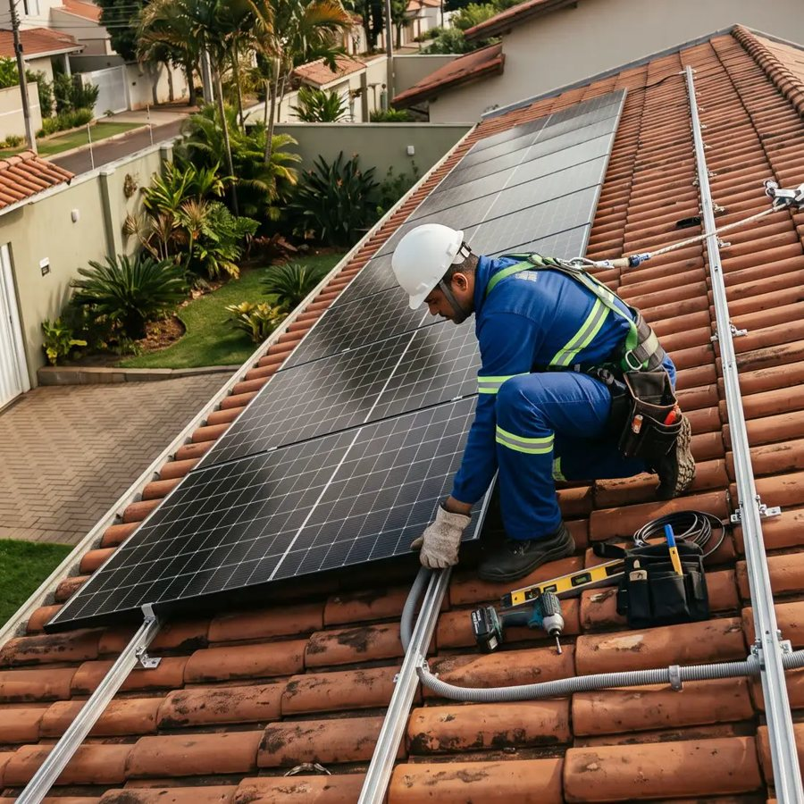

Orçamento de energia solar
{{cliente.nome}}
Life Energia Solar · Piracicaba
{{textos.capa_frase}}
Válido até {{f.validade}}
Orçamento de energia solar
Life Energia Solar · Piracicaba
{{textos.capa_frase}}
Válido até {{f.validade}}

{{vendedor.nome_completo}}, {{vendedor.cargo}}.
{{vendedor.objetivo}}
Conheça a Life
{{empresa.manchete}}
{{prints.legenda}}
{{/se}} Antes dos números, um combinado{{textos.combinado}}
Combinado?

Você economiza, em média
R${{f.eco_mes_n}}
por mês
Produção de {{f.producao_mes}} kWh por mês: {{f.cobertura}}% do que você gasta hoje.


{{garantia_geracao.texto}}
{{textos.antes15}} {{f.antes15}}
Hoje
R${{f.preco_n}}
6x de {{f.cartao_6x}}
sem juros, ou até 20x
Ou financiado
Válido até {{f.validade}}
O próximo passo
{{textos.pergunta_final}}
{{textos.proximo_passo}}
Agendar a visita técnica{{textos.proximo_detalhe}}
E se ainda não for a hora{{textos.agora_nao}}
Avisar pelo WhatsAppUm abraço, {{vendedor.nome}}
Seu orçamento em uma tela
Resumo do seu orçamento
{{avaliacoes_fim.nota}}
Sua conta por mês: {{#cada f.composicao}}{{rotulo}} {{valor}}{{#se mais}}{{/se}}; {{/cada}}total de {{f.conta}}.
{{/se}} {{#nao f.composicao}}Sua conta de luz hoje: {{f.conta_base}} por mês.
{{/nao}} {{#se f.taxa_minima}}A taxa mínima da CPFL ({{f.taxa_minima}}) continua na conta; a economia de {{f.conta_eco}} por mês já vem descontada dela.
{{/se}}{{#se economia.observacao}}{{economia.observacao}} {{/se}}{{textos.rodape_estimativa}}
{{item}}, {{anos}} anos {{curto}}: {{detalhe}}.
{{/cada}} {{#se garantia_geracao.detalhe}}{{garantia_geracao.titulo}}: {{garantia_geracao.detalhe}}
{{/se}}{{textos.prazo_instalacao}}
{{textos.nota_cartao}} {{#se f.financiamento}}{{textos.nota_financiamento}} {{/se}}{{textos.nota_antes15}}
Válido até {{f.validade}} ({{f.validade_dias}} dias a partir de {{f.data}}). {{textos.validade_motivo}}